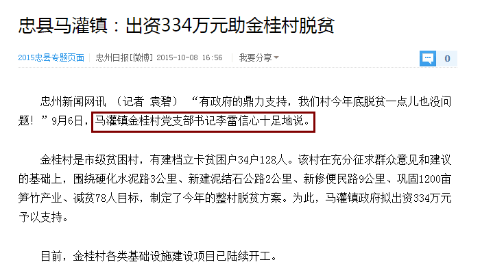
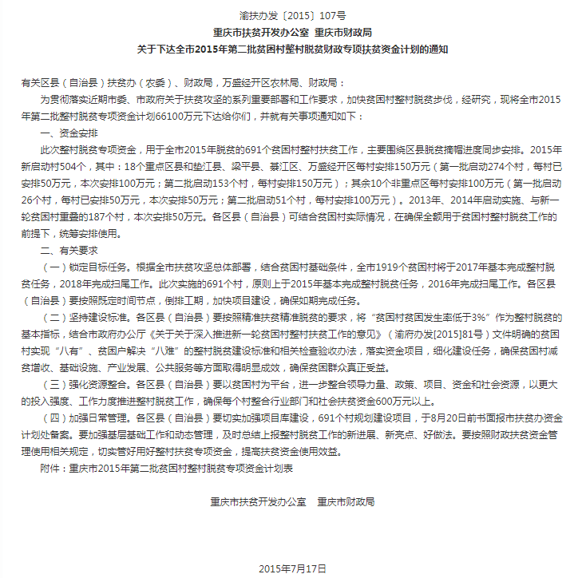
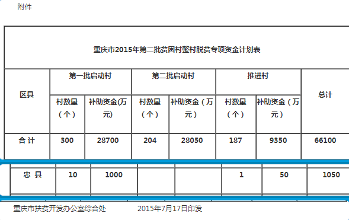

关于对重庆市忠县政府贪官污吏涉嫌贪污、欺上瞒下、欺压百姓、不作为等问题的举报!
| 作为一名土生土长的忠县马灌人，对自己家乡忠县马灌镇的村村通道路建设有以下疑问。忠县马灌镇金桂村三组从砚台石下去谢家院子到新屋湾院子这一段公路，直线距离500米的主干道，向上级反映几十年，至今还是布满荆棘的羊肠小道，还没通公路，整个沟里面近千人出行受阻，无人过问；并且国家也有相关村村通政策，为什么我老家那一段路一直不能修，为什么老百姓交的公路费无法得到应有的使用（整个忠县农民10年上交公路款数额巨大：RMB1600/人，上至80岁的老人下至刚出生的婴儿都不放过，全县有100多万人，估计有近20亿的公路款），请交委和上级政府予以重视。不要让老百姓对政府失去信心。谢谢！ 详细情况请访问：https://charliexie2014.github.io/jubao/index.html |
交款证据 道路现状 不公之路 地图了解这段路 修这条路的重要性 |
| 有图有证据有真相; 拒绝敷衍百姓的官方答复; 上级要是重视请提供 |
1实地调查情况？ | 2处理情况？ | 3如何才能修好这条路？ | 4公路款何时交完？ |
| 要致富，先修路"，这虽是句老话，却道出了山里百姓的心声。金桂村三组条件艰难，尤其是砚台石下几家大院子的人都盼望着有条公路能通往外界，由于此村落在三汇和马灌交界的地方，离高洞街上很近，平时人们上街都是去高洞街上，几十年来泥路崎岖不平，起伏颠簸，使得村民老幼都是苦不堪言，本村没有任何的经济来源，主要靠种地为生，农民种粮食和养的猪需要卖钱看病，都需要肩挑背扛通过这条路，非常的危险，直线距离500米左右，这条路修起来并不难，难的是当官的不闻不问，只顾自己，不顾村民的死活，搞得村民怨声载道。
只需要500米就可以把一条死路盘活，方便近千人的出行，东边可直达三汇镇上下忠县城，西边可以到达高洞直达马灌镇，同时也可以带动两个镇10多个村子的经济发展，投资等；使得两个镇的村民受益； 由于涉及三汇、马灌两个镇，恳请忠县政府相关单位派人予以落实，我仅代表我村落感谢为上！我们村落是金桂村三组,请落实谢谢！联系电话：134 1853 1971，139 5097 4691 |
| 2017年8月23日11点："村镇干部敷衍百姓" | 有位张姓的镇干部在村长乐治斌的带领下来到谢家院子，简单的聊了两句，凳子还未坐热就草草了事，便匆忙的离开； |
1、村民反应的情况属实，也讲了修这条路的重要性和必要性； 得到的可恶答复是："你们的情况我了解了，但是修路需要钱，你们上面没有关系，没有人，国家不会拨款"， 拜托你不要骗老百姓好不好？村民没有钱，但是有劳动力，有愚公移山的精神，再说直线500米的路需要多少钱？ 全县交公路款20亿去了哪里？难道不是取之于民用之于民吗？ 2、期间村民多次请求去实地考察路况，被拒绝； 你们难得来一次实地考察，都到目的地了不肯去，你们是来干吗的？是帮村民排忧解难，还是来敷衍百姓好回去交差呢？ 3、村民问怎样才能修这条路，回答是等以后国家有指标了就可以了，让慢慢等；这句话村民都等几代人了，何时是个头？ |
| 2017-10-13 14:44:08 重庆市忠县马灌镇敷衍百姓 |
谢生先生： 您好，您于2017年8月22日反映："忠县马灌镇金桂村三组从砚台石下去谢家院子到新屋湾院子这一段公路，直线距离500米的主干道，
向上级反映几十年，至今还是布满荆棘的羊肠小道，还没通公路，整个沟里面近千人出行受阻，无人过问；并且国家也有相关村村通政策，
为什么我老家那一段路一直不能修，为什么老百姓交的公路费无法得到应有的使用（整个忠县农民10年上交公路款数额巨大：RMB1600人，
全县有100多万人，估计有近20亿的公路款），请交委和上级政府予以重视。不要让老百姓对政府失去信心"。 我们于2017年8月23日受理，并发出受理告知书。现就相关事项回复如下： 经查，谢生，重庆市忠县马灌镇金桂村3组居民，性别男,身份证号：500233198XXXXX551X。 敷衍了事的答复意见书如下： 农村公路建设规划，一是优先考虑受益人群量，二是考虑是否能带动产业发展，三是考虑资金的筹集，综合这三方面的因素，确定规划建设。 据了解，您反映的金桂三组从砚台石下去谢家院子到新屋湾院子这一段公路是整个沟里近千人出行道路，与事实不符，其实仅涉及我镇金桂村3组4户十几余人， 另三汇镇部分居民通行。 农村公路建设，资金来源为交委专项补助资金25.4万元/公里，其余资金需受益人群自筹，您反映的上交公路款数额巨大， 每人1600元，其实很多群众远没有筹集这么多，甚至是不愿筹集， 村民筹集到的资金也只会用于农村公路建设。接您反映后， 我镇相关工作人员积极协调解决，该路于2017年8月动工打通该路，现已完工，能够通行。 下一步我们将组织人员对道路进行定期维护，确保道路正常通行。 综上所述，您反映问题不属实，故对你诉求不予支持。 如不服本处理意见，可自收到处理意见书之日起30日内向忠县人民政府提出复查申请， 如逾期不提出复查申请，各级人民政府信访工作机构和其他行政机关不再受理。 |
敷衍一、由于年轻人都外出打工，不能只统计留守人员）；
涉及金桂3组人口：1、谢宏凡家全部人口20人，2、田立权家全部人口15人，3、张太仁家人口10人，人口40人被马灌政府敷衍成十几人，居然能把大活人敷衍没了。 敷衍二、（由于年轻人都外出打工，不能只统计留守人员）；据村民反应8月23日11点有位张姓的镇干部在村长乐治斌的带领下来到谢家院子，简单的聊了两句，凳子还未坐热就草草了事，便匆忙的离开；根本没有去核查涉及到三汇的人，你们可以去问问三汇人到高洞街上到底涉及到多少人？（据不完全统计户主：周召林，吴明文，吴明红，田立国，田立武，田华平，田新凡，王之凡，谢定凡，等等）每户按照20口算，都有200人，还不算隔壁三汇的几个特大院子(叶家河沟具体户主：叶政法，谢汉凡，谢维己，周康能，谢成明，周召文，周召刚，赤脚医生田淑冰，周召泽等，田冲沟院子户主：田长义，田长一，田长能，田立井，田中，谢中银等等)，他们上高洞街上都非常希望走这条便捷的公路 敷衍三、上至80岁的老人下至刚出生的婴儿都不放过，我提供了上缴公路款的收据证据确凿你们都不承认？没有筹集那么多不远筹集的事情，你们为啥拿着公章威胁居民，一切需要公章的事情需要先补齐公路款，否则户口，子女上学等事情等全都免谈？ 敷衍四、接您反映后，我镇相关工作人员积极协调解决，该路于2017年8月动工打通该路，现已完工，能够通行。 说这句话你们好意思吗？你们马灌政府具体做了哪些工作？出资金了？出人力物力了？还是出面协调两个镇的土地了？ 据了解此段路由于了解情况的人答复不符合规定不能修， 村民求助无门才自行出资出力修路，由于土地协调等问题两镇没有谈拢导致实际的路只修了一段，并没有连通，导致现在为止还是搁置状态,无法通车。 |
| 2017-11-07 上午； 重庆市忠县马灌镇跟村民哭穷讲困难，不解决实际问题 | 以周主任为代表的一行人在没有通知信访人或者户主的情况下，再次来到谢家院子,面对一位80岁的老人作说明;李雷书记反映：关于资金问题主要责任有两个，第一是村里面，第二是政府领导（2016年财政奖补资金50万元拿到了贵阳村，因为原来的协调问题，还有个别同志把领导得罪了他就把原本属于金桂的50万拿到了贵阳村去搞实施，导致金桂村还有19%的人的路还是布满荆棘的杂草） 欧主任提了三个建议给村民；从以前一直到现在大家从各级鼓励自己动手丰衣足食，改变居住条件，祖一辈身在了这样的条件，自己心往一处想改变居住环境，劲往一处使，为了后一代，村干部李雷书记和三汇的村干部到出面协调土地问题，中心思想是条件只有这个样子，马灌镇没有企业投资，没有税收，就靠国家财政拨少部分款，用于政府官员的工资和办公的费用，要修路资金需要村民自己去拉赞助，比如跟大老板，有关系的部门，找马灌政府也没办法，带不下来钱，告诉村民不要上半夜想自己下半夜想他人，“警告”村民对政策不了解的情况下先打电话给村干部了解，不要凭一时想象想反映什么就反映什么，弄到上面去，对大家不安逸，人也得罪了，事情也没办好，没必要这样， |
哭穷 |
|  |
|  |
|  |
| 《农村公路建设管理办法》 | 《重庆市农村公路建设管理办法》 | 重庆市人民政府关于加快重庆农村公路发展的通知 | 中共重庆市委重庆市人民政府关于精准扶贫精准脱贫的实施意见 | 2017年信访工作实施意见 |
习主席最牵挂之人
习近平总书记曾强调，变群众上访为领导主动下访，是我们党的优良传统和作风，是每个领导干部应尽的责任和义务。要认真落实市区两级领导干部下访接访制度，由领导干部牵头化解一批信访疑难问题。要把群众反映强烈、影响本地稳定的热点难点问题纳入领导包案。
 |